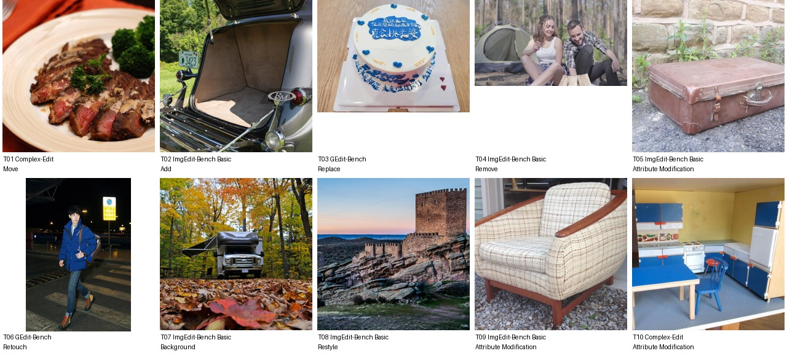
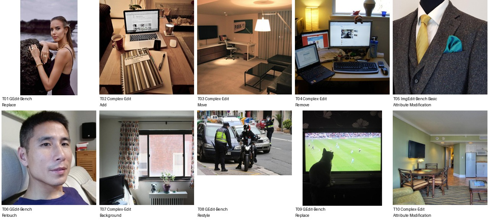

Khoa Bui · persona_001
农业保育规划师，与妻子和一只狗生活，平日修老Chevy、调音响，也喜欢喜剧、排舞和记录甜瓜品种。基础信息仅作弱约束；本轮额外知识按10条匹配任务补充。
 逐条审核、查看Profile与记录意见 →
逐条审核、查看Profile与记录意见 →欢迎参与数据审核。已固定100位V3基础人物；目前5位、50组图文构建稿。新增四位为persona_002–005。人物特色仅轻量结合basic，具体编辑知识按匹配任务反向补充。
数据说明 · 完整Profile JSON · Base JSON · 个性化指令JSON请选择一位人物，查看10组图片、明确指令、个性化指令与Profile，记录不自然、矛盾或无法确定的地方。完成后导出意见JSON，作为附件交回 jian_lang@std.uestc.edu.cn。意见先保存在当前浏览器，导出后可另存备份。
农业保育规划师，与妻子和一只狗生活，平日修老Chevy、调音响，也喜欢喜剧、排舞和记录甜瓜品种。基础信息仅作弱约束；本轮额外知识按10条匹配任务补充。
逐条审核、查看Profile与记录意见 →Azusa Bessho从事轨道工程公众沟通，已有家庭、周末出游和市政图纸收藏背景。任务围绕普通家居、餐食、聚会与轨道题材轻量匹配；具体颜色、图案、清理强度等在选图后补充。
 逐条审核、查看Profile与记录意见 →
逐条审核、查看Profile与记录意见 →Hayes Jorgensen从事信用社应付账款，爱钓鱼、烧烤、折扣工具和旧汽车旅馆明信片，已有银色Tacoma。这里用工具与修复、出行、餐食和明信片风格做轻量匹配；不把图片里的其他车辆都认作他的Tacoma。

逐条审核、查看Profile与记录意见 →Folarin Ezeani从事消费洞察与高端影音销售，已有未婚妻、婚礼筹备和阳台香草园。任务弱结合影音样机、婚礼配饰与香草盆栽，也保留普通服装与照片需求；不把陌生模特认作未婚妻。

逐条审核、查看Profile与记录意见 →Xandro Panganiban从事市政道路桥梁协调，已有女友、幼儿、两只宠物和浴室更新计划。按需要将既有两只宠物落实为金毛Sunny与黑白猫Pip，不额外增加第三只；并轻量匹配浴室材质、家庭出行和日常餐照。
 逐条审核、查看Profile与记录意见 →
逐条审核、查看Profile与记录意见 →